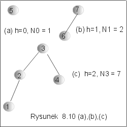
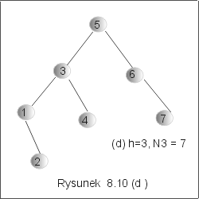

| « poprzedni punkt | nastêpny punkt » |
Niech Dh bêdzie drzewem AVL o wysoko¶ci h, które zawiera najmniejsz± mo¿liw± liczbê wierzcho³ków w¶ród wszystkich wywa¿onych drzew binarnych poszukiwañ. Niech Nh oznacza liczbê wierzcho³ków w drzewie Dh.
Przyk³ad 5.1
Gdy h=0, to drzewo, które mo¿na narysowaæ ma jeden wierzcho³ek. Zatem N0 = 1. Gdy h=1, mo¿na zbudowaæ tylko drzewa o 3 lub o 2 wierzcho³kach, zatem N1=2. Na rysunku 8.10 przedstawiono przyk³adowe drzewa D0-D3. Usuniêcie dowolnego wierzcho³ka w tych drzewach zaburza w³asno¶æ wywa¿enia, albo powoduje zmniejszenie wysoko¶ci. J
|  |  |
Ogólnie, drzewo Dh mo¿na przedstawiæ jako po³±czenie drzewa Dh-1 o wysoko¶ci h-1 z drzewem Dh-2 o wysoko¶ci h-2, jak pokazano na rysunku 8.11. Drzewa tego typu nazywa siê drzewami Fibonacciego.
Wynika st±d natychmiast, ¿e liczba wierzcho³ków w drzewie Dh jest sum± liczb wierzcho³ków jego lewego i prawego poddrzewa zwiêkszon± o 1 (korzeñ drzewa). Mamy zatem
N0 = 1, N1 = 2, Nh = Nh-1 + Nh-2 +1. (*)
Lemat 5.1 Dla dowolnego h ³ 0, minimaln± liczbê wierzcho³ków w wywa¿onym drzewie binarnych poszukiwañ mo¿na oszacowaæ przez Nh ³ 2 h/2.
Dowód lematu 5.1 przeprowadzimy przez indukcjê ze wzglêdu na h. Dla h=0, h=1 nierówno¶æ jest spe³niona, jak pokazuje przyk³ad 5.1. Za³ó¿my, ¿e nierówno¶æ Ni ³ 2 i/2 jest spe³niona dla wszystkich liczb naturalnych i mniejszych ni¿ pewna ustalona liczba h i o szacujmy warto¶æ Nh korzystaj±c z rekurencyjnej definicji (*). Mamy
Nh = Nh-1 + Nh-2 +1 ³ 2 (h-1)/2 + 2 (h-2)/2 + 1 = 2 h/2( 1/2 + Ö2/2 )+1.
Poniewa¿ (1+ Ö2)/2 ³ 1, wiêc ostatecznie Nh ³ 2 h/2. J
Jako natychmiastowy wniosek z lematu 5.1 otrzymujemy:
Lemat 5.2 Koszt operacji member, insert i delete dla dowolnego drzewa AVL o n wierzcho³kach s± rzêdu O(lg n).
Rzeczywi¶cie, skoro minimalna liczba wierzcho³ków w drzewie o wysoko¶ci h wynosi Nh, zatem, je¶li n jest liczb± wierzcho³ków w dowolnym AVL o wysoko¶ci h, to n ³ Nh. Z lematu 5.2 mamy wiêc n ³ 2 h/2. Po zlogarytmowaniu otrzymamy h £ 2lg n. Czyli w dowolnym drzewie AVL, wysoko¶æ jest nie wiêksza ni¿ podwojony logarytm z liczby wierzcho³ków drzewa. Koszt operacji member, insert, delete jest proporcjonalny do wysoko¶ci drzewa, w którym te operacje s± wykonywane. St±d oszacowanie z³o¿ono¶ci algorytmów dla tych operacji O(lg n).
Pytanie 5: Ile mo¿na zbudowaæ ró¿nych drzew AVL o etykietach 1,2,3,4,5,6,7 i wysoko¶ci 3?
| « poprzedni punkt | nastêpny punkt » |